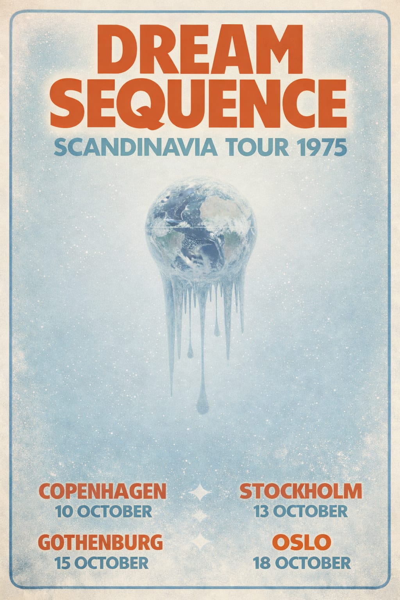
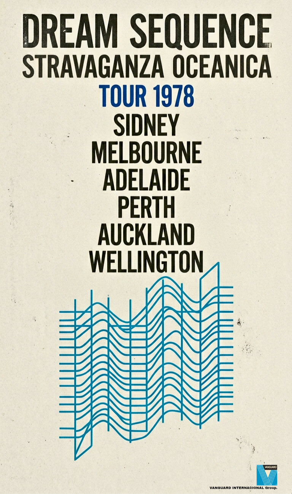
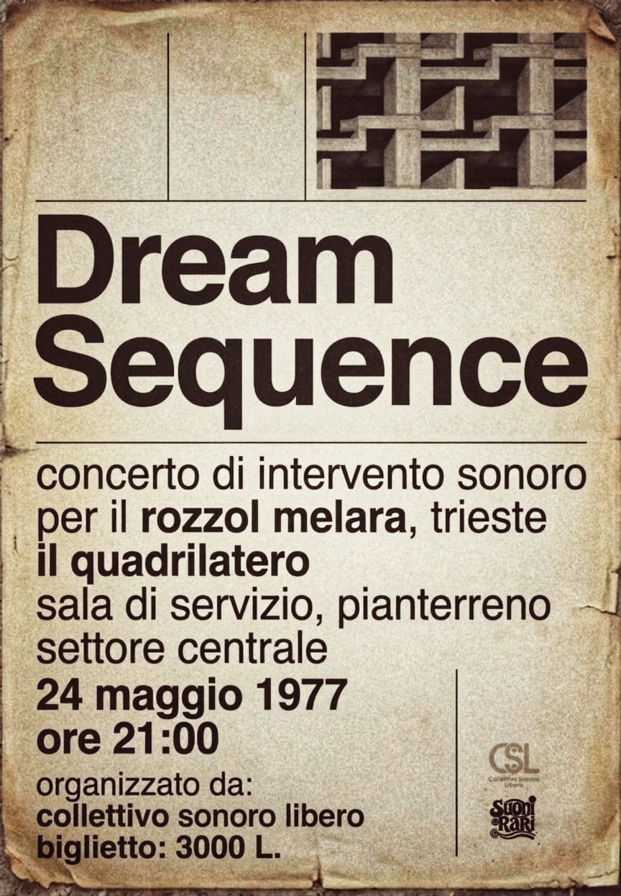

Live Signals
Transmission Archive • 1973 - 1981
Tours

Scandinavia
Copenhagen • Stockholm • Oslo • 1975

Italian Transmissions
Trieste • Bologna • Firenze • Roma • Napoli • Milano • June 1975

Benelux Cycle
Amsterdam • Utrecht • Rotterdam • Ghent • Antwerp • Brussels • Jan/Feb 1976

North America Arc
Toronto • Montreal • Boston • New York • 1978

Stravaganza Oceanica
Sydney, Melbourne, Adelaide, Perth, Auckland, Wellington • 1978
City Concerts

Roma
Aula 5, Facoltà di Architettura, Università La Sapienza • 25 Ottobre, 1973

Trieste
Teatro Miela • June 04, 1975

Ljubljana
Kud France Prešeren • Feb 05, 1976
Utrecht
Tivoli • Feb 14, 1976

Lisboa
Coliseu dos Recreios • May 1976

Praha
Divadlo Hudby • September 1976

Barcelona
Escola Massana • Oct 1, 1977

Trieste
Rozzol Melara • December 1977

New York
Beacon Theatre • March 25, 1978

Isu-Kan
Isu-Kan Live • Oct 1980